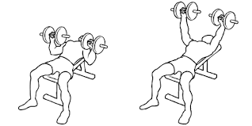
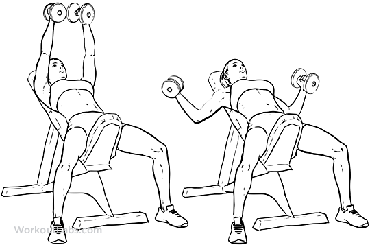
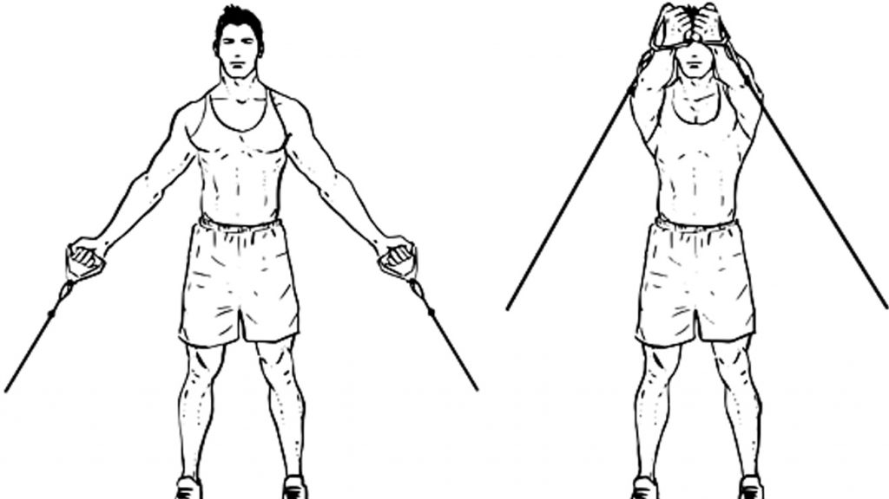

Your chest has 3 sections. The lower, the upper, and the middle sections.

Dumbbell Flat Bench Press
How to:
Step 1: Pick up the dumbbells off the floor using a neutral grip (palms facing in). Position the ends of the dumbbells in your hip crease, and sit down on the bench.
Step 2: To get into position, lay back and keep the weights close to your chest. Once you are in position, take a deep breath, and press the dumbbells to lockout at the top.
Step 3: Slowly lower the dumbbells under control as far as comfortably possible (the handles should be about level with your chest).
Step 4: Contract the chest and push the dumbbells back up to the starting position.

Incline Dumbbell Fly
How to:
Step 1: Adjust your bench to a 30 to 45-degree incline position.
Step 2: Sit on the bench, straddling it with your feet flat on the floor. Rest the weights on your thighs just above the knees for heavier loads or centered at the chest for lighter weights.
Step 3: Raise the dumbbells over your chest, elbows slightly bent, and palms facing each other. (envision hugging a barrel over your chest)
Step 4: Inhale and slowly lower the dumbbells in a maintained arc position until you feel a mild stretch in your chest or shoulders.

Cable Lower Chest Raises
How to:
Step 1: Start off setting up handles on a low pulley cable machine, standing in between the machines, grabbing the handles with both hands and keeping your arms at your sides.
Step 2: Slowly bring the handles together in front of your body at about waist level and squeeze your lower chest.